Human Care Systems · Healthcare UX · 2014–2020
Lead Senior UX/UI Designer on the 0-to-1 design and launch of Resilix, a telenursing platform serving patients and care teams — earning the 2019 Graphic Design USA UX/UI Award within 18 months of launch.
The Context
Human Care Systems is a healthcare company delivering patient support programs for biopharmaceutical clients. As Lead Senior UX/UI Designer, I directed the full design effort behind Resilix — a telenursing platform that connected patients with care teams through digital channels, enabling remote monitoring, medication adherence support, and proactive outreach.
The platform was built from 0-to-1 over 18 months — from early user research and concept development through product launch and market adoption. Within its first year, Resilix earned the 2019 Graphic Design USA UX/UI Award, recognized for design excellence in digital product.
My Role
I led a team of 4–6 designers across all phases of the Resilix product build — setting design direction, mentoring team members, and owning the product's visual and interaction language. My responsibilities spanned user research, information architecture, interaction design, high-fidelity prototyping, and design system governance.
Beyond the core product, I also led creative production for the broader HCS brand — developing paid media campaigns, social content, video assets, infographics, and go-to-market materials that told the Resilix and HCS story to patients, providers, and pharma partners.
The Product
Telenursing platforms serve patients navigating complex health journeys — often dealing with chronic conditions, specialty medications, or recent diagnoses. Every design decision had to balance clinical precision with warmth and clarity, creating an experience that felt supportive rather than clinical and overwhelming.
Designed the patient-side interface for Resilix — enabling patients to connect with their care team, log health data, access educational resources, and receive proactive support. Focused heavily on accessibility, plain language, and reducing cognitive load for patients managing complex treatment regimens.
Designed the care coordinator interface — giving telenurses a full view of their patient population, flagging at-risk patients, surfacing key interactions, and enabling efficient outreach workflows. The design had to support high caseloads while keeping the most critical patient signals front and center.
Click any image to view full screen
In addition to leading the Resilix product design, I owned the creative output for the full HCS brand — developing assets across video, social, print, and paid media that brought the company's mission to life for patients, clinicians, and pharma partners.
This included brand campaigns like HCS Pride, recruitment ads, patient adherence infographics, and explainer videos. Working with the marketing and leadership team, I translated complex clinical and operational concepts into clear, audience-appropriate narratives.
Digital campaigns, ads & social content
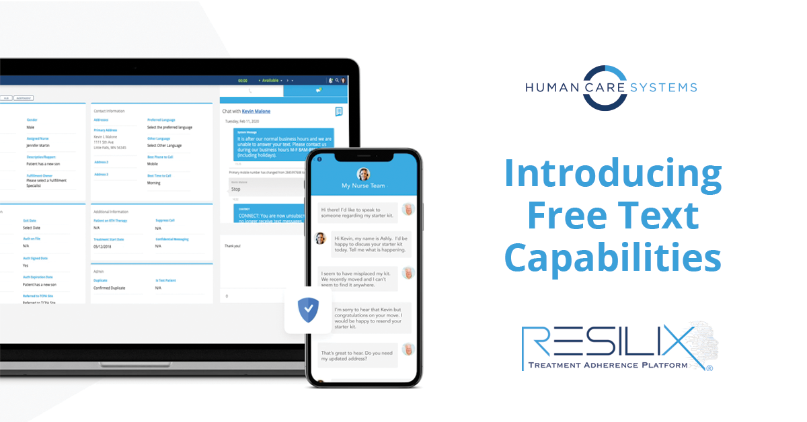
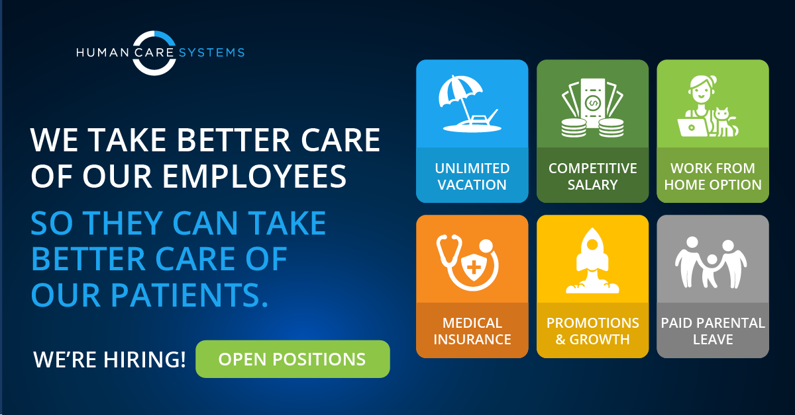
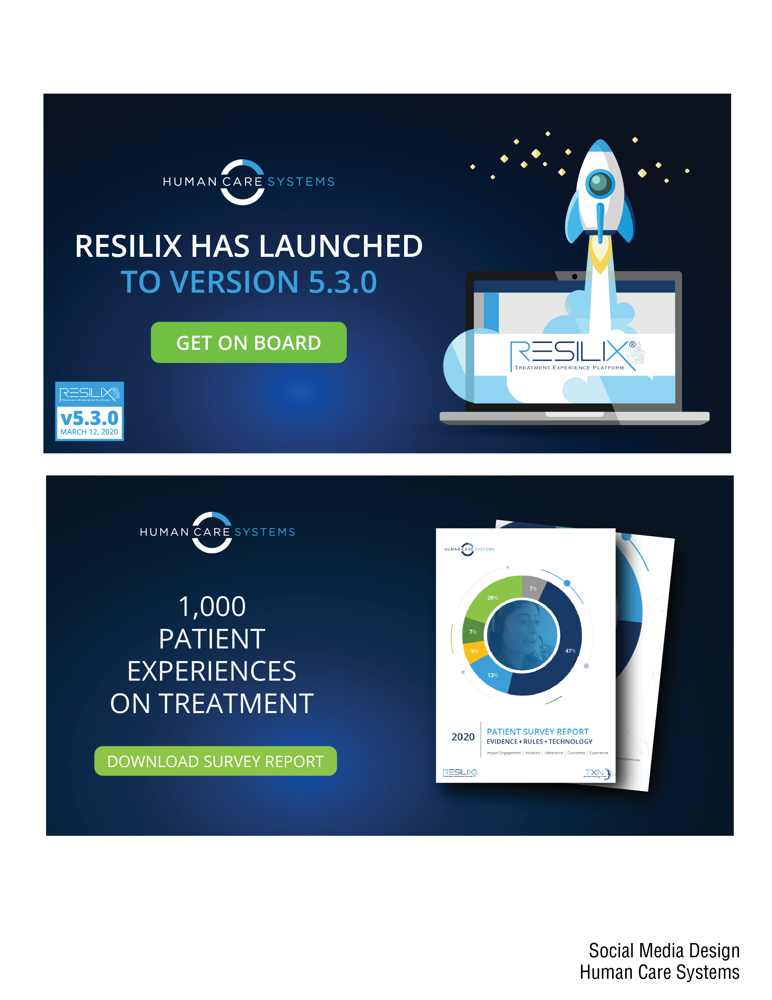
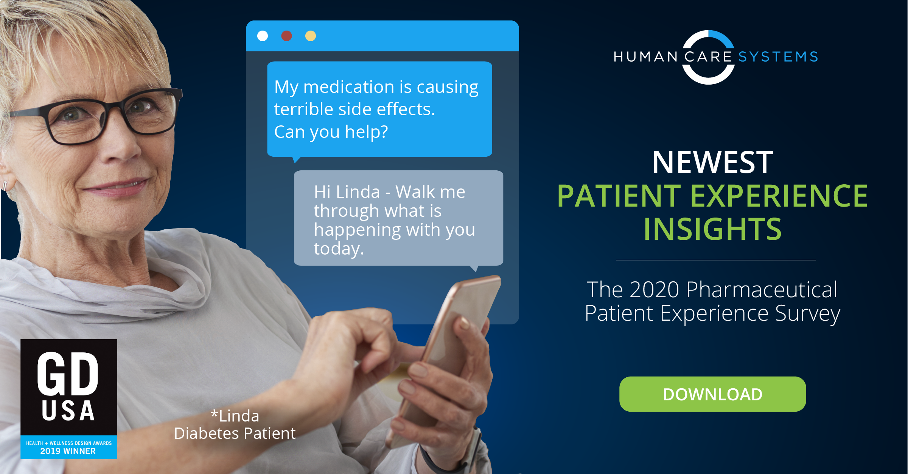
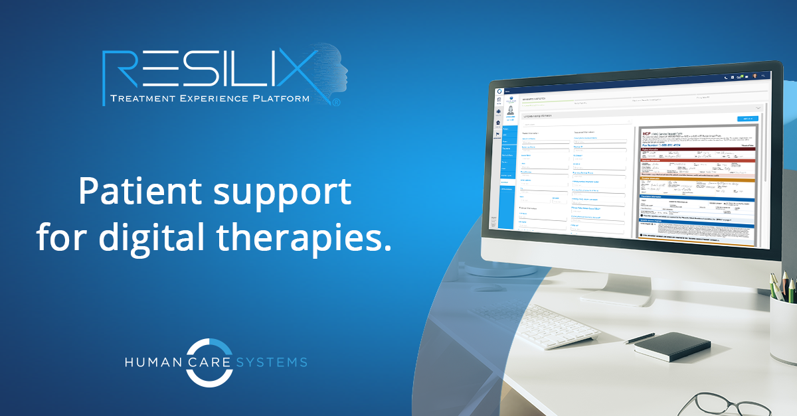
Print, data visualization & brand materials
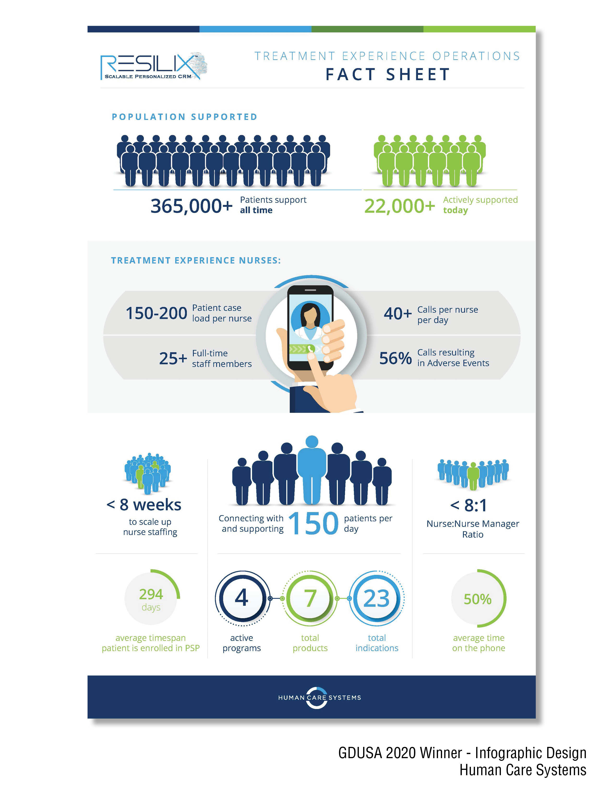
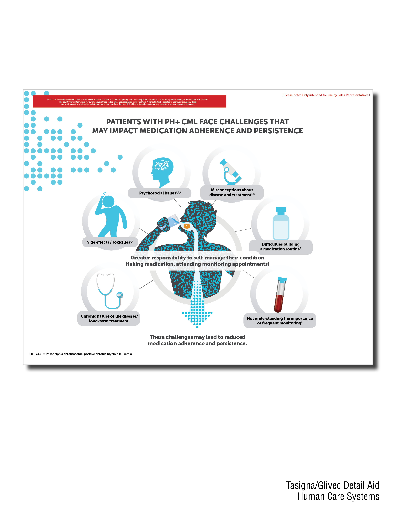
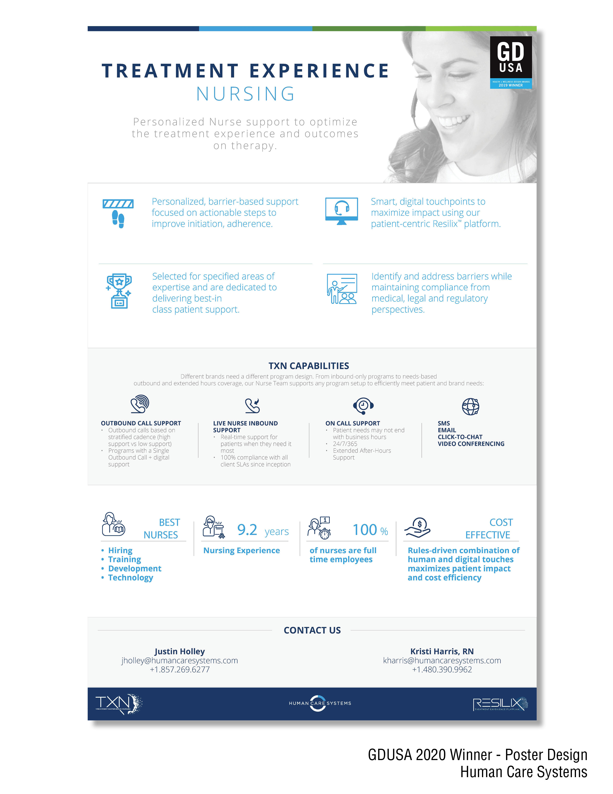
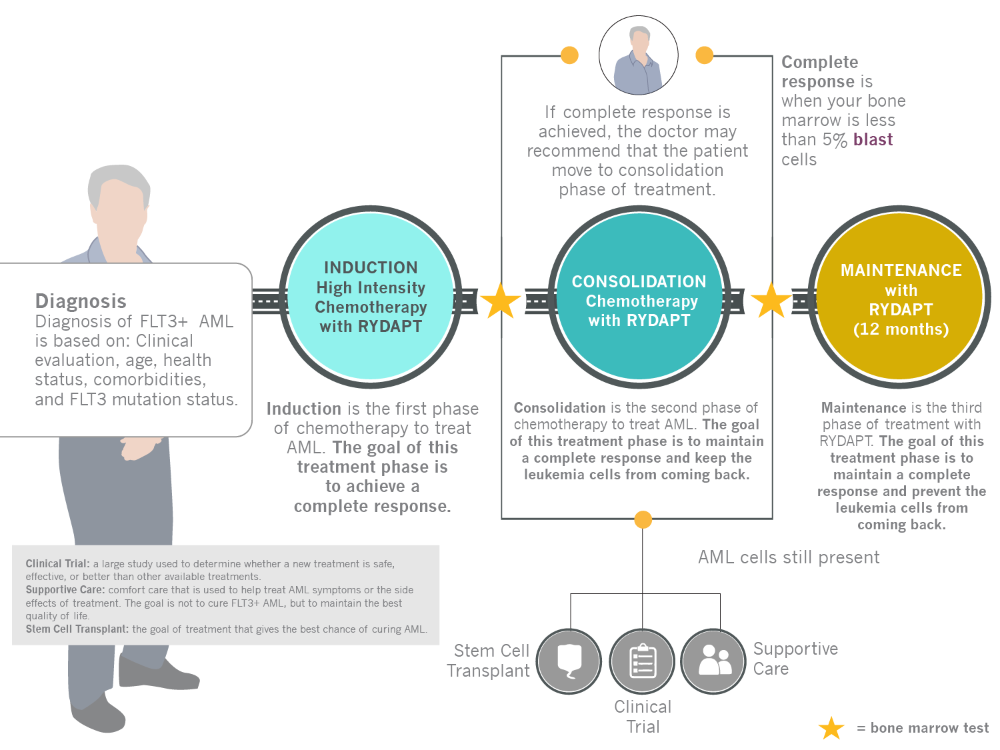
Led the winning team at the HCS internal hackathon
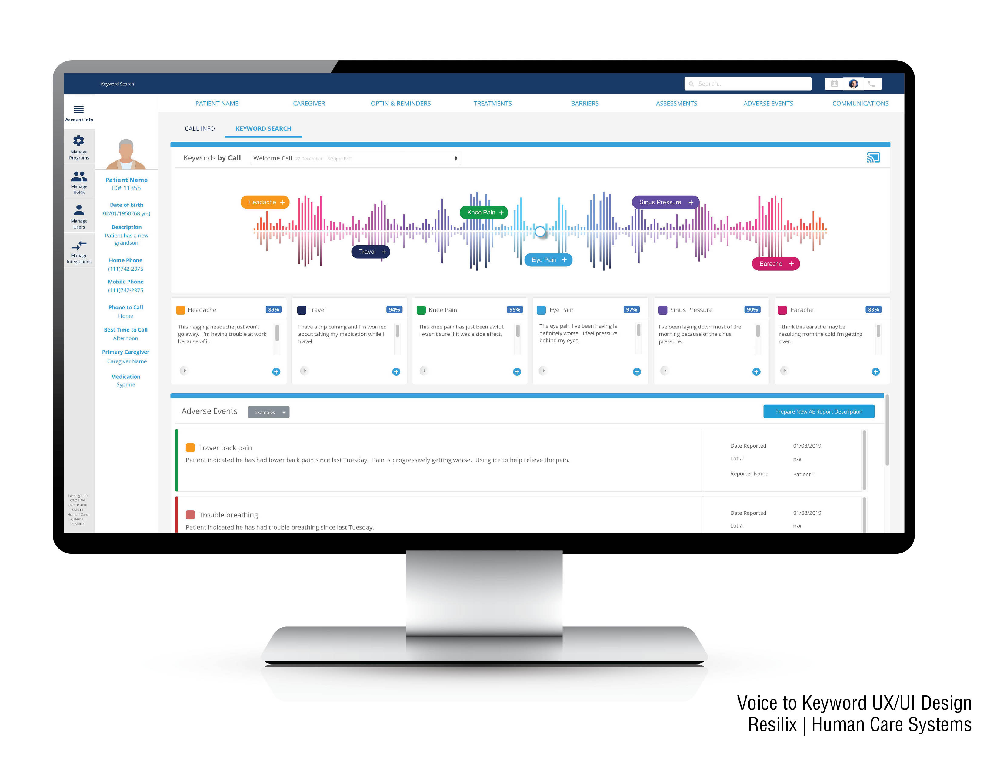
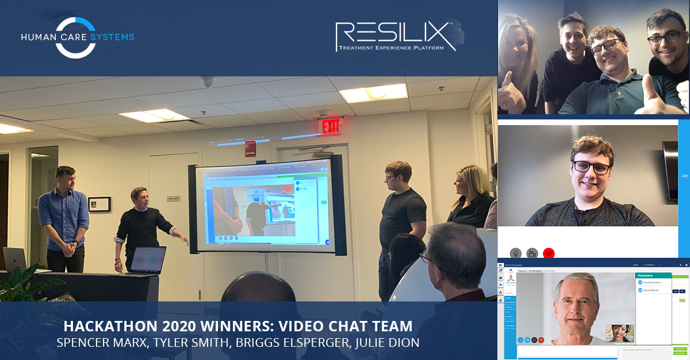
What I Built
Tools & Skills